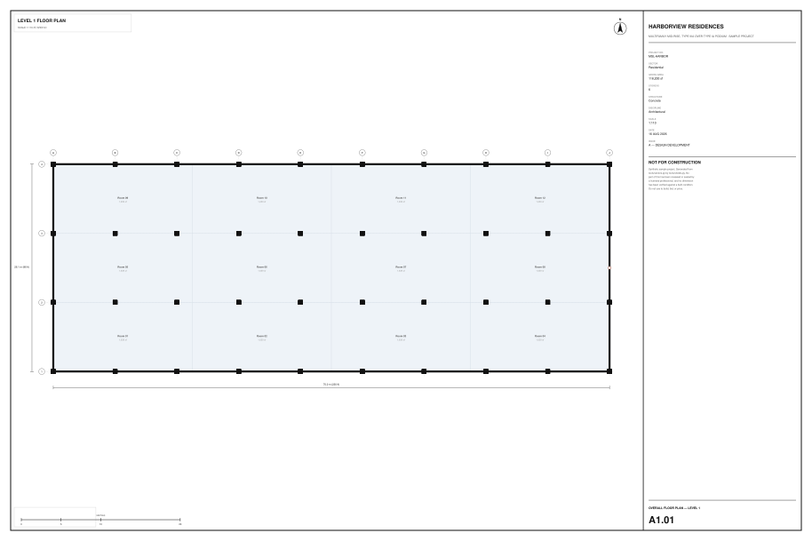
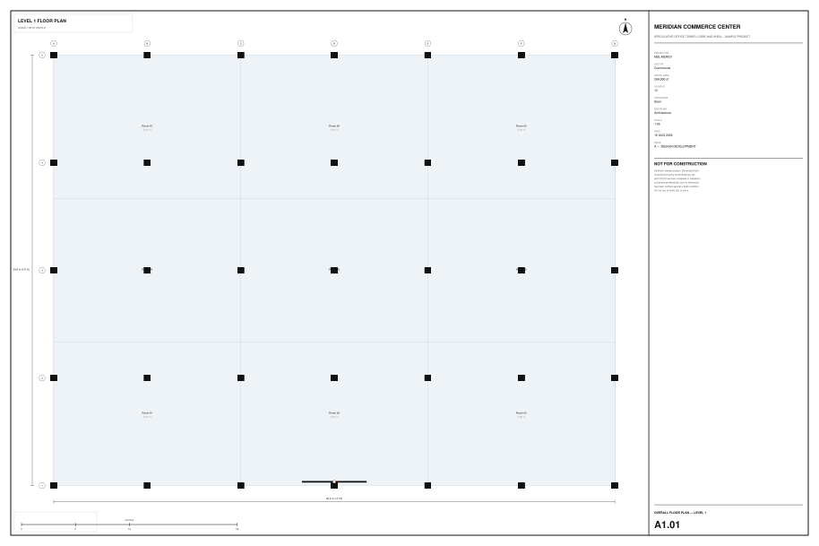
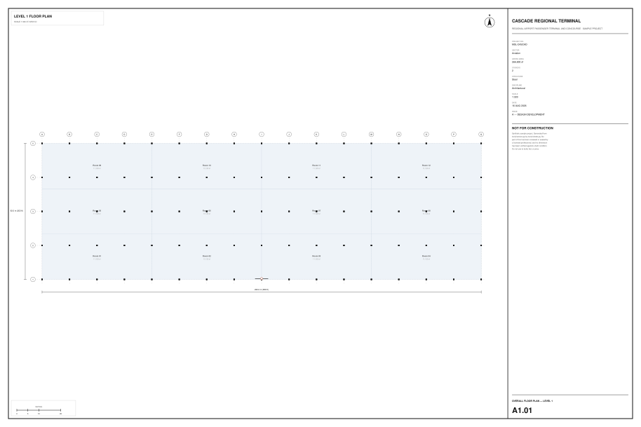
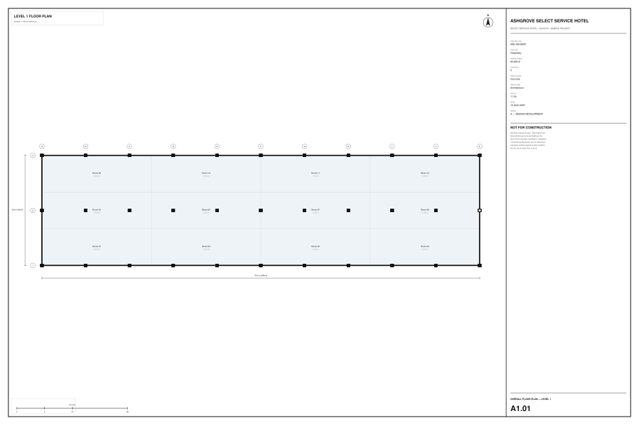
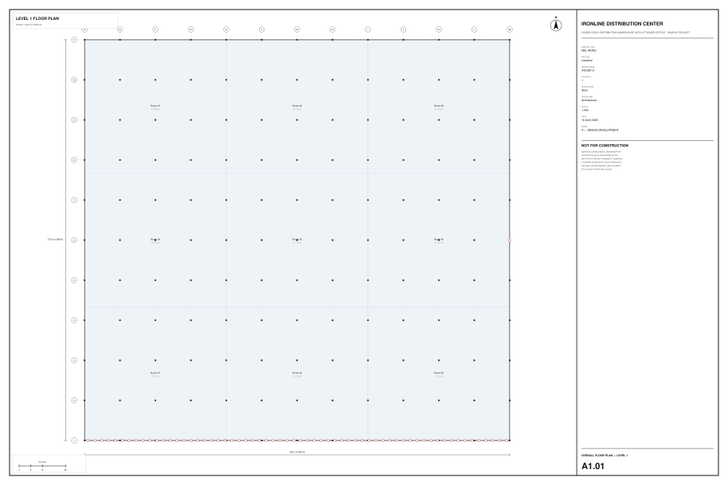
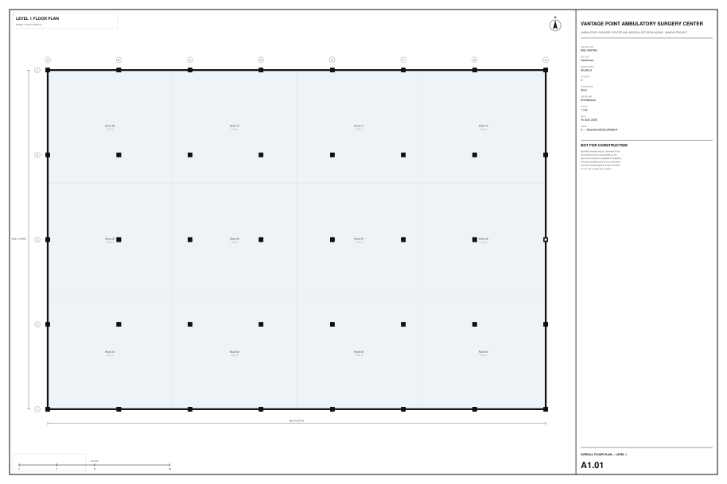
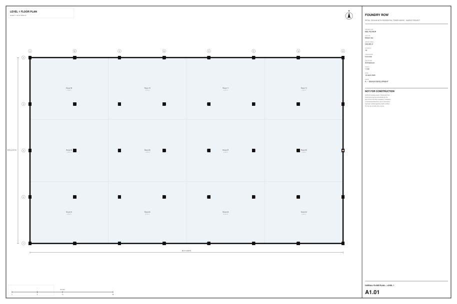
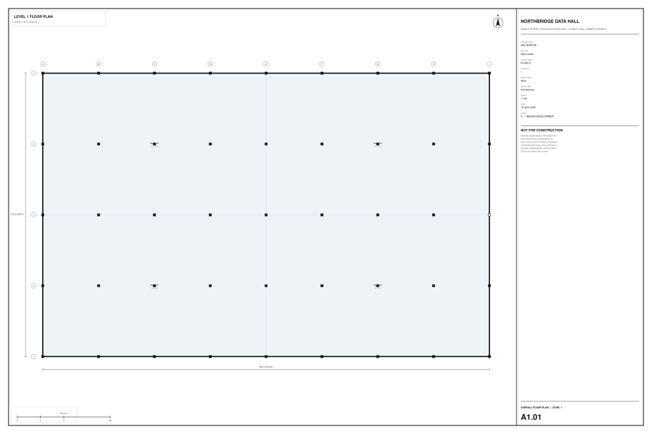

Free · CC0 · No attribution required
8 .mass containers, one per building sector — each
carrying an LOD 400 model and the commercial data a project actually runs on: an
executive report, a CSI-coded budget, a CPM schedule, a development pro forma, approvals,
risk, procurement, and issued drawings. Plus a contributed vertiport package and an
in-browser authoring demo.
“Load a sample” usually means a bare geometry file. You can orbit it, and that is the entire demonstration — no estimate, no schedule, no RFIs, no returns. Every number a construction platform exists to produce is missing from the thing meant to show it off.
A container carries all of it. These samples open with populated registers: budget lines tied to CSI cost codes, a schedule broken to one activity per level, field-verification records bound to IFC GlobalIds, and a pro forma that ties back to the same cost basis the budget uses.








.mass file isA plain ZIP archive. There is no proprietary encoding anywhere in it, and you do not need Massing to read one. Building elements are referenced by IFC GlobalId throughout, so a budget line, a schedule activity or a field-verification record can always be tied back to an element in the model.
manifest.json format, version, a full entry
inventory, and what deliberately
did NOT travel
project.json id, name, origin, source IFC
data/<table>.json one file per table, JSON arrays
geometry/ the source IFC + a converted
viewing tile derived from it
index/props.json the element index
blobs/ drawings and documentsUnzip one and look: unzip -l samples/commercial/meridian_commerce_center.mass
Geometry is LOD 400: fabrication-level connections — base plates, shear tabs, bolts — reinforcement cages with real cover and tie spacing, material layer sets with real thicknesses, and a derived analytical model carrying loads and supports.
The LOD 500 record layer is on every element: as-built verification, measured-versus-design variance, manufacturer and serial, O&M and warranty references, Uniformat classification and MasterFormat spec links. Measured coverage is in the LOD audit.
One honest caveat. BIMForum defines LOD 500 as field-verified — an element earns it by being checked against what was actually built. These models are synthetic, so nothing here has been surveyed, and each verification record says exactly that in its own note field rather than implying a site visit that never happened. Everything else the definition requires is present and complete.
Every model passes the product's own QA gates: zero constraint errors and a
lossless serialise/reparse roundtrip. Modelled IfcSpace area agrees with declared
gross area to within 0.2%, so the model and the money describe one building.
Open the .mass directly, or drop it in the app's samples
directory and it will be listed and described from its own manifest.
Extract geometry/*.ifc and open it in
BlenderBIM, Solibri, Navisworks, Revit, FreeCAD — anything that reads IFC4.
The CSVs, the executive reports and the drawings are plain text and SVG. Read them in a browser.